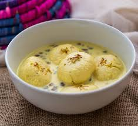

Gulab JAMUN
- Price: 200rs
- Made with Sugar,Bread &Oil
- Indian Sweet
More About Gulab Jamun
-
Energy boost:
The high carbohydrate content in Gulab Jamun provides a quick energy source due to rapid sugar absorption. -
Calcium source:
Khoya, a primary ingredient, is derived from milk and contains some calcium, important for bone health. -
Moderate protein:
Khoya also provides a moderate amount of protein, necessary for muscle repair. -
Mood enhancement:
Like many sweet treats, the sugar in Gulab Jamun can temporarily elevate mood

Rasmalai
- Price: 300rs
- Made with Milk,lemain juice,&Sugar
- Indian Sweet
More About Rasmalai
-
Full fat milk is crucial
Using low-fat milk won't produce the right texture for the chhena.
Calcium source:
Milk used in rasmalai provides a good amount of calcium, important for maintaining healthy bones and teeth.
-
Rich in vitamins and minerals:
Depending on the recipe, rasmalai can contain vitamins like vitamin A, B, and C, along with minerals like potassium and magnesium.
-
High protein content
The main ingredient, paneer, is a rich source of protein which is essential for muscle building and repair.
